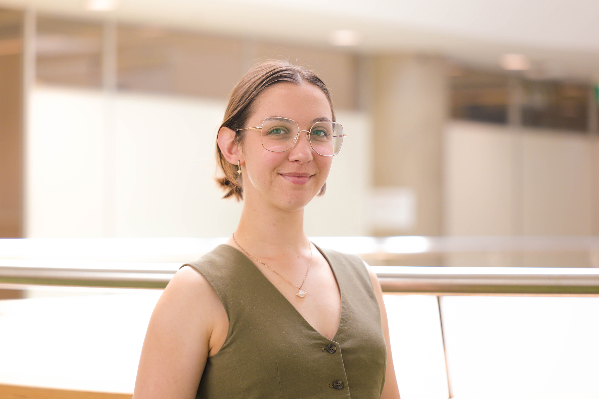
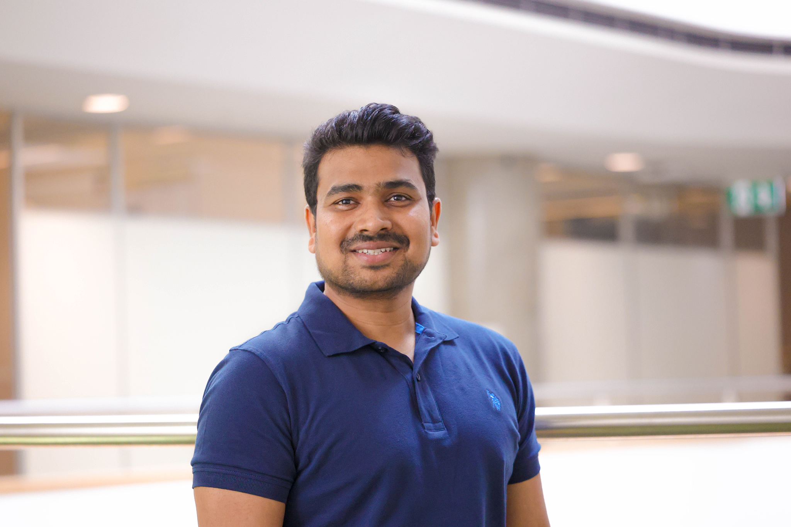
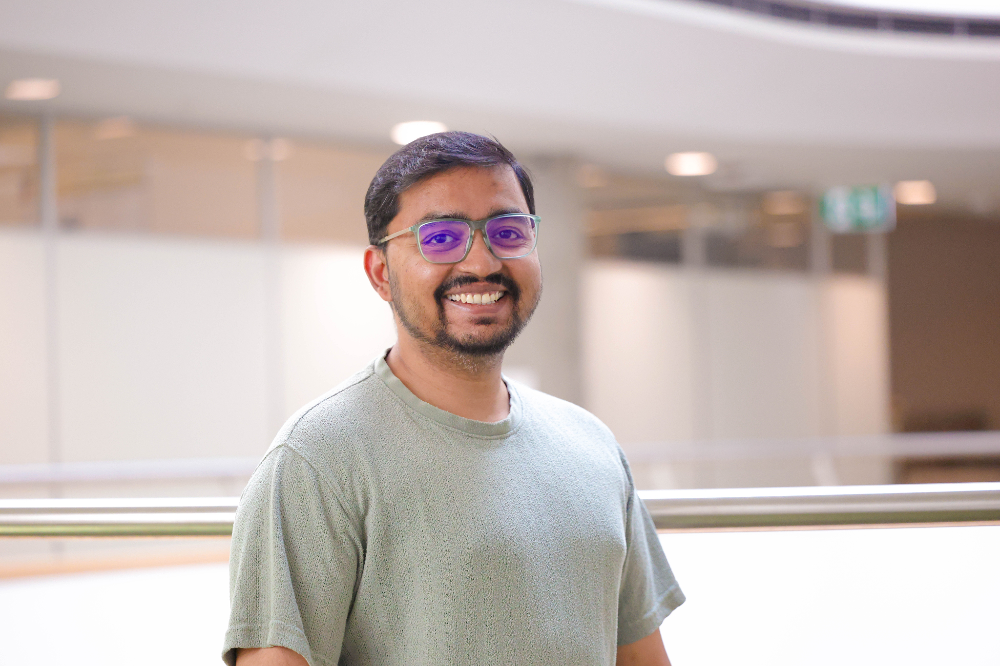
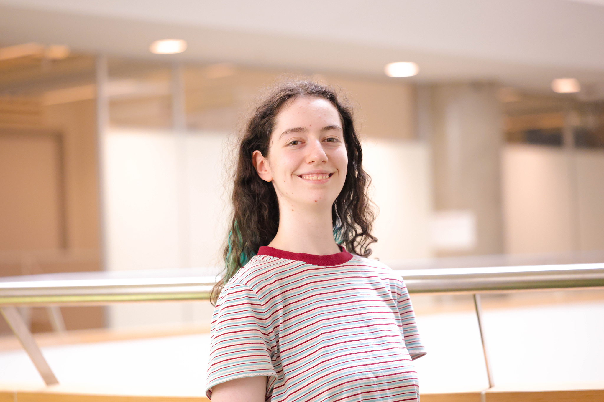

Prof. Matthew Bailes
Founder
ASTRAL Director
30+ Years Experience
Pulsars
Gravitational Waves
Fast Radio Bursts
Professor Matthew Bailes is known for his pioneering work on millisecond pulsars and fast radio bursts and is the founder of the ASTRAL program. His PhD on at ANU was awarded the Crawford Prize in 1990, and he won the CSIRO medal for his work that unveiled many of the brightest millisecond pulsars in the Southern hemisphere. He was awarded the Australian Research Council's Endeavour, QEII, Senior and Laureate Fellowships, and has led two successful Centre of Excellence bids on gravitational wave discovery. He is currently the Director of the OzGrav Centre of Excellence. In 1998 he founded the Swinburne Centre for Astrophysics and Supercomputing, now one of Australia's major astronomical research centres.

Dr. Chris Flynn
Researcher
ASTRAL Coordinator
30+ Years Experience
Stellar Photometry
Astrometry
Optical Astronomy
Dr. Chris Flynn has over 30 years experience working in optical and radio astronomy, with an emphasis on measuring the matter content of the universe. He obtained his PhD in 1989 from Mount Stromlo Observatory at the Australian National University, has worked in Heidelberg Germany, Copenhagen Denmark, in Princeton and Columbus in the US and at the Tuorla Observatory in Finland. During this period he worked primarily with space-based optical observatories, such as Hipparcos,the Hubble Space Telescope, and Gaia. He has been a senior researcher in the Centre for Astrophysics and Supercomputing at Swinburne University of Technology for the last decade, working on Fast Radio Bursts and pulsars.

Dr. Kirsten Banks
Content Creator
Science Communicator
ASTRAL Mentor
Stellar Astrophysics
Indigenous Astronomy
Science Communication
Dr. Kirsten Banks is a Wiradjuri woman, astrophysicist, and science communicator. She is well known for her work in stellar astrophysics and her advocacy for Indigenous Australian astronomy. Kirsten is a lecturer at Swinburne University and serves as a Science Communicator for OzGrav. She is widely recognized for making complex space concepts accessible through digital media, with a massive following on platforms like TikTok where she shares her passion for space.

Dr. Emma Carli
Researcher
Postdoctoral Fellow
ASTRAL Mentor
Pulsar Timing
Extragalactic Pulsars
Neutron Stars
Dr. Emma Carli is an OzGrav Postdoctoral Research Fellow at Swinburne University. Her research primarily focuses on radio astronomy, specifically the study of pulsars and neutron stars. She currently manages pulsar timing data from the MeerKAT radio telescope and is a pioneer in extragalactic pulsar searches, having significantly increased the known population of these objects during her doctoral studies.


Saurav Mishra
ASTRAL Mentor

Rudra Sekhri
ASTRAL Mentor

Bailee Wolfe
ASTRAL Mentor

Akhil Jaini
ASTRAL Mentor

Daniel Rosina
ASTRAL Mentor

Tristan Than
ASTRAL Mentor

Evie Spilias
ASTRAL Mentor

Rebecca Koehne
ASTRAL Mentor

Nandini Vyas
ASTRAL Mentor

Evie Vale
ASTRAL Mentor

Dr. Rahul Sengar
ASTRAL Mentor

Dr. Vivek Venkatraman Krishnan
ASTRAL Mentor
Carl Knox
ASTRAL Mentor

Hendrick Combrinck
ASTRAL Mentor

Madeleine Willshire
ASTRAL Mentor